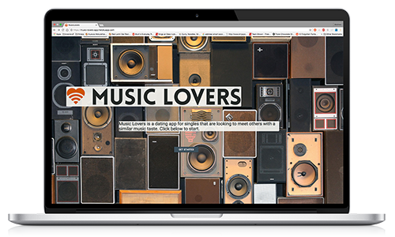
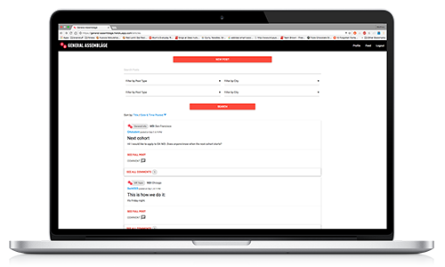
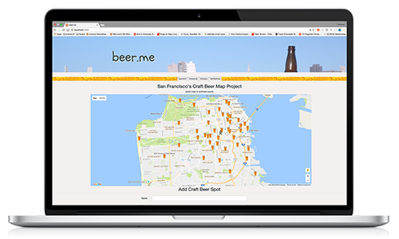

Writer, teacher, photographer, dental assistant, commercial pilot, licensed chiropractor; these are a few of the things that I am not. I am a web developer and Sociology graduate living in the bay area. My time is spent learning new skills and improving as a developer, trying to be less terrible at chess, practicing yoga and enjoying the local craft beer scene. I love the web and think that it is the most important advancement of my generation. I have recently decided to take that passion and turn it into a career as a web developer.

Built on the Rails stack, Music Lovers is an online dating platform for people seeking matches with compatible music tastes. Users can create a profile as well as login to an exsiting one. Features authentication and authorization on the backend for user matching algorithm.

General Assemblage is a full stack rails app built with a group of three other colleagues. General Assemblage is a social networking tool for General Assembly students and graduates across all disciplines to connect and collaborate. My main responsibilty was working on the front end and UI design.

Beer.me is a craft beer mapping project for the San Francisco area. Developed with the MEAN stack, beer.me allows users to interact with a GoogleMaps API integration that displays information from a full CRUD database of craft beer destinations.